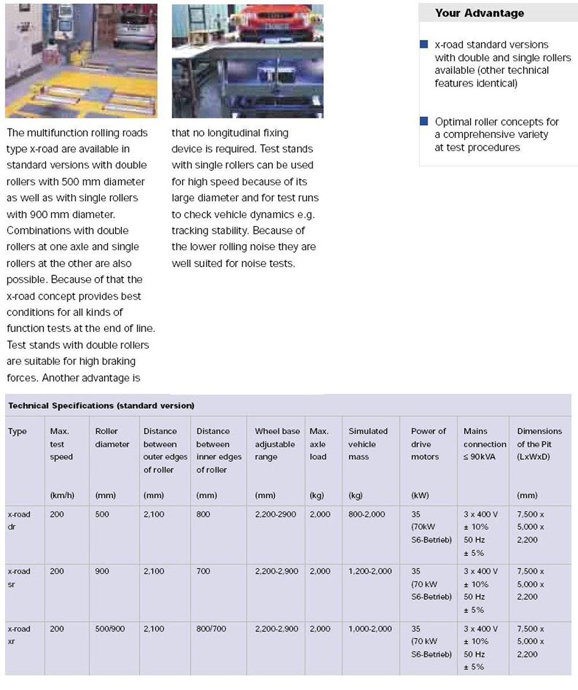

向邦 TURN LUCKILY
首頁
公司簡介
動力計HORIBA
生產線檢測DURR
流量測試台SuperFlow
流量計Max
聯絡我們
DURR車輛生產線檢測
* 生產線成車最終產品檢驗線測試設備
* 充填設備:煞車油、冷媒方向機油、冷卻液、雨刷水..等充填設備
* 定位儀、頭燈測試、End of Line檢測、Brake Leak Test
自德國 Dürr 集團 Factory Assembly System
*** Fluid Filling ***
